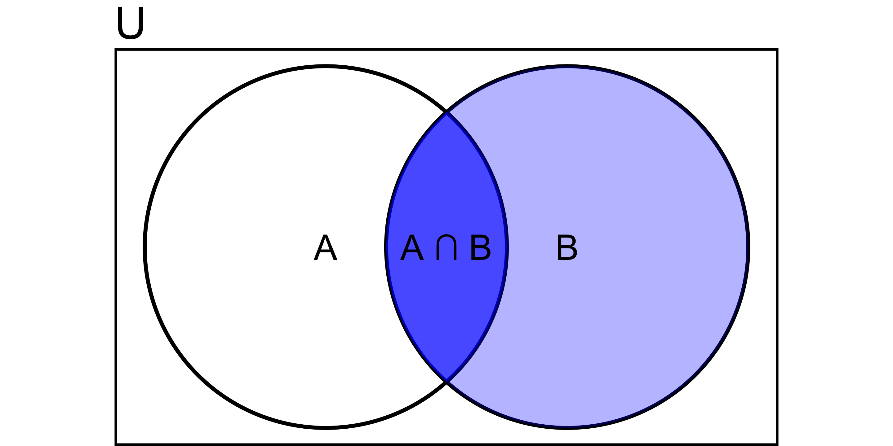
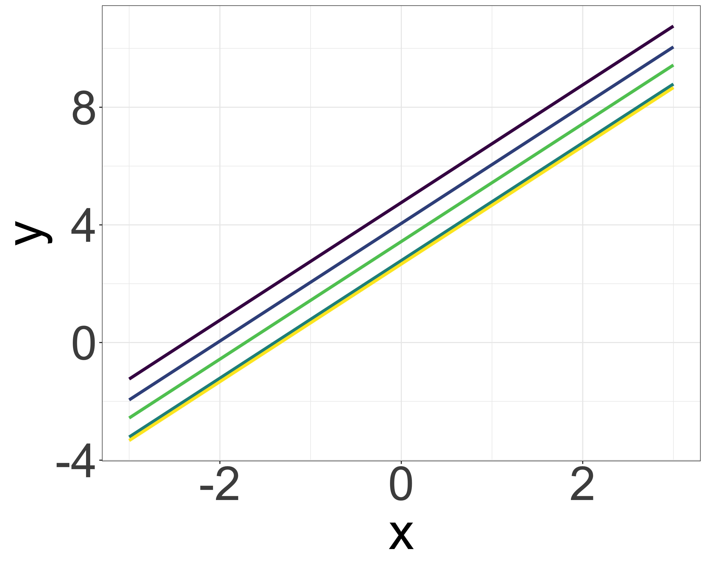
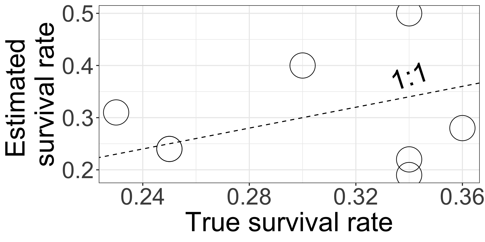

Bayesian estimation for ecology
üßëü誂Äçüíª Masatoshi Katabuchi @ XTBG, CAS
- mattocci27@gmail.com
- @mattocci
- github.com/mattocci27/bayes-afec
- https://mattocci27.github.io
November 12, 2022 XTBG AFEC
Objectives
We Learn
Why Bayesian estimation is useful
Why multilevel models are important
We Do Not Learn
- How to use and code Bayesian models in Stan and R
Likelihood
Assuming everyone knows the concept of likelihood
Likelihood and probability density distribution
\(f(x \mid \mu, \sigma) = \frac{1}{\sqrt{2\pi\sigma^2}}\mathrm{exp} \bigl[{-\frac{1}{2}\bigl\{\frac{x-\mu}{\sigma}}\bigr\}^2\bigr]\)
A likelihood function is a probability density (mass) function of parameters and data, and it indicates the probability of observing the data for a given set of parameters.
e.g., when your model is \(x \sim \mathcal{N}(\mu = 0, \sigma^2 = 1)\) (normal distribution with mean 0 and variance 1), what is the probability of observing x = 1.96?
- \(P(x = 1.96 \mid \mu = 0, \sigma = 1)\)
Likelihood
When your data is x = {-1.5, 0, 1.5} and your model is \(x \sim \mathcal{N}(0, 1)\), what is the probability of observing x?
- \(L = P(-1.5 \mid 0, 1) \times P(0 \mid 0, 1) \times P(1.5 \mid 0, 1)\)
- \(\mathrm{log}L = \mathrm{log}P(-1.5 \mid 0, 1) + \mathrm{log}P(0 \mid 0, 1) + \mathrm{log}P(1.5 \mid 0, 1)\)
Likelihood
Because we usually don’t know the true parameters (\(\mu\) and \(\sigma\)), we need to find the parameters that maximize the likelihood function (Maximum Likelihood Estimation).
- e.g., for a liner model \(y = ax + b\), we usually assume that \(y \sim \mathcal{N}(\mu = ax + b, \sigma^2)\), and we want to find the parameters \(a\), \(b\), and \(\sigma\) that maximize the likelihood function: \(P(y \mid ax + b, \sigma)\)
Maximum Likelihood Estimation (MLE)
- 2 survivors out of 5 seedlings: What is the survival probability of seedlings?
\(p\): survival rates, \(1-p\): mortality rate
\(L = {}_5C_2 p^2(1-p)^3\) (Binomial distribution)
\(\mathrm{ln}L = \mathrm{ln}{}_5C_2 2\mathrm{ln}p + 3\mathrm{ln}(1-p)\)
\(\frac{d\mathrm{ln}L}{dt} = \frac{2}{p} - \frac{3}{1-p} = 0\)
\(p = \frac{2}{5}\)
Outline
Multilevel Model
Conditional Probability and Bayes’s Theorem
Prior
Multilevel Model Revisited
Multilevel Models
“…rare species suffered more from the presence of conspecific neighbors than common species did, suggesting that conspecific density dependence shapes species abundances in diverse communities.”
- Comita et al. 2010 -
[1] Comita, L. S., Muller-Landau, H. C., Aguilar, S. & Hubbell, S. P. Asymmetric density dependence shapes species abundances in a tropical tree community. Science 329, 330–2 (2010).
Multilevel model (verbal model)
Inspired by [1] Comita, L. S., Muller-Landau, H. C., Aguilar, S. & Hubbell, S. P. Asymmetric density dependence shapes species abundances in a tropical tree community. Science 329, 330–2 (2010).
There is negative density dependence (NDD) of seedling survival rate, and the strength of NDD varies among species. The strength of NDD depends on species abundance.
- Model survival rates as a function of conspecific seedling density (individual-level).
- Model the strength of NDD (i.e., slopes) as a function of species abundance (group-level).
Multilevel model (non-verbal fake model)
- Not that simple
Multilevel model (non-verbal model) ü§¢
Inspired by [1] Comita, L. S., Muller-Landau, H. C., Aguilar, S. & Hubbell, S. P. Asymmetric density dependence shapes species abundances in a tropical tree community. Science 329, 330–2 (2010).
data{
int<lower=1> N; // number of samples
int<lower=1> J; // number of sp
int<lower=1> K; // number of tree-level preditors (i.e, CONS, HETS,...)
int<lower=1> L; // number of sp-level predictors (i.e., interecept, SLA,...)
matrix[N, K] x; // tree-level predictor
matrix[L, J] u; // sp-level predictor
array[N] int<lower=0, upper=1> suv; // 1 or 0
array[N] int<lower=1, upper=J> sp; // integer
}
parameters{
matrix[K, L] gamma;
matrix[K, J] z;
cholesky_factor_corr[K] L_Omega;
vector<lower=0, upper=pi() / 2>[K] tau_unif;
}
transformed parameters{
matrix[K, J] beta;
vector<lower=0>[K] tau;
for (k in 1:K) tau[k] = 2.5 * tan(tau_unif[k]);
beta = gamma * u + diag_pre_multiply(tau, L_Omega) * z;
}
model {
vector[N] mu;
to_vector(z) ~ std_normal();
L_Omega ~ lkj_corr_cholesky(2);
to_vector(gamma) ~ normal(0, 2.5);
for (n in 1:N) {
mu[n] = x[n, ] * beta[, sp[n]];
}
suv ~ bernoulli_logit(mu);
}
generated quantities {
vector[N] log_lik;
corr_matrix[K] Omega;
Omega = multiply_lower_tri_self_transpose(L_Omega);
for (n in 1:N) {
log_lik[n] = bernoulli_logit_lpmf(suv[n] | x[n, ] * beta[, sp[n]] +
phi[plot[n]] + xi[census[n]] + psi[tag[n]]);
}
}\(s_{i,j} \sim \mathcal{B}(p_{i, j})\): likelihood
\(\mathrm{logit}(p_{i,j}) = \boldsymbol{x_{i}} \cdot \boldsymbol{\beta_{j}}\): linear algebra
\(\boldsymbol{\beta_j} = \boldsymbol{\gamma_k} \cdot \boldsymbol{u_j} + \mathrm{diag}(\boldsymbol{\sigma})\cdot \boldsymbol{L} \cdot \boldsymbol{z}\): linear algebra
\(L \sim \mathrm{LkjCholesky}(\eta)\): prior (?)
\(z_j \sim \mathcal{N}(0, 1)\): prior (?)
\(\tau \sim \mathrm{Cauchy}(0, 2.5)\): prior (?)
\(\gamma_k \sim \mathcal{N}(0, 2.5)\): prior (?)
Conditional Probability and Bayes’s Theorem
Conditional Probability and Bayes’s Theorem
\[ P(A \mid B) = \frac{P(B \mid A) \times P(A)}{P(B)} \]
Conditional probability
Bayes’s Theorem
Forward / inverse problems
Bayes revisit
Probability

Probility of A:
\[ P(A) = \frac{A}{U} \]
e.g., probability of rolling a dice and getting an odd number is 3/6 = 1/2
Conditional Probability

Probility of A ocurring given B has already occured:
\[ P(A \mid B) = \frac{A \cap B}{B} = \frac{(A \cap B)/U}{B/U} \\ = \frac{P(A \cap B)}{P(B)} \]
e.g.,
- P(Cough) = 5%
- P(Cough | Sick) = 75%.
Bayes’s Theorem
\[ P(B \mid A) = \frac{P(A \cap B)}{P(A)} \]
\[ P(A \mid B) = \frac{P(A \cap B)}{P(B)} \]
\[ P(A \mid B) \times P(B) = P(B \mid A) \times P(A) \]
\[ P(A \mid B) = \frac{P(B \mid A) \times P(A)}{P(B)} \]
Why is this useful?


Forward and Inverse Problems
X: 3 red balls, 5 white balls
Y: 1 red balls, 3 white balls
Randomly choose a bag X or Y
\(P(A)\): Probability of choosing X
\(P(B)\): Probability of drawing a red ball
\(P(A \cap B)\): Probability of choosing X and drawing a red ball
\(P(B \mid A)\): Probability of drawing a red ball when you chose X
\(P(A \mid B)\): Probability that you atually chose X, when you got a red ball
\(P(A) = 1/2\)
\(P(B \mid A) = 3/8\)
\(P(B)\) = 1/2 \(\times\) 3/8 + 1/2 \(\times\) 1/4 = 5 /16
\(P(A \cap B)\) = 1/2 \(\times\) 3/8 = 3/16
\(P(A \mid B)\) = \(P(A \cap B) / P(B)\) = (3/16) / (5/16) = 3/5
\[ P(\mathrm{Parameter} \mid \mathrm{Data}) = \frac{P(\mathrm{Data} \mid \mathrm{Parameter}) \times P(\mathrm{Parameter})}{P(\mathrm{Data})} \]
\(P(\mathrm{Parameter} \mid \mathrm{Data})\)
- When you got your data, what were the parameters behind the data (e.g., coefficients of regressoins)?
\(P(\mathrm{Data} \mid \mathrm{Parameter})\)
- When you know your parameters, what is the probability of getting your data? (i.e., likelihood)
\(P(\mathrm{Parameter})\)
- Probaility to get your parameters (i.e., prior)
\(P(\mathrm{Data})\)
- Independent with parameters (i.e., constant)
Prior
Prior (coins)
- A: 2 head out of 3 tosses -> 2/3 = 0.666
- B: 60 heads out of 100 tosses -> 60/100 = 0.6
\(L_A = {}_3C_2 p^2 (1-p)^1\)
\(L_B = {}_{100}C_{60} p^{60} (1-p)^{40}\)
\(\mathrm{Prior} \propto p^{50} (1-p)^{50}\)
- Beta distribution with mean 0.5 and small variance
Prior (coins)
\(Post_A \propto p^2 (1-p)^1 \times p^{50} (1-p)^{50}\)
\(Post_A \propto p^{52} (1-p)^{51}\)
p = 52/103 = 0.5048
\(Post_B \propto p^{60} (1-p)^{40} \times p^{50} (1-p)^{50}\)
\(Post_B \propto p^{110} (1-p)^{90}\)
p = 110/200 = 0.55
- \(Like_B\): 60 heads out of 100 tosses
- \(Prior_B\): P(H) is about 50% for other coins
- \(Post_B\): P(H) is somewhere between 50% and 60% (55% in this example)
- We usually have some sense of a scale about parameters, we can legally use that information
Priors and ecology
- Given that y = {-3, …, 3}, x = {-3, …, 3}, and y = ax + b, we don’t know if there is a correlaion but we can at least guess the parameter a should be much smaller than 1000, and probaly some where between -5 and 5.

Priors and ecology

- \(y_i = ax_i + b_j\)
- If the parameter \(b_j\) is similar within each group (e.g., species difference):
- Likelihood: \(y_i \sim \mathcal{N}(ax_i + b_j, \sigma)\)
- Prior: \(b_j \sim \mathcal{N}(\mu_b, \tau)\)
Priors and ecology
- If the data \(y_i\) is similar to the surrounding samples (e.g., spatial autocorraliton):
- Likelihood: \(y_i \sim \mathcal{N}(\mu + \tilde{r_i}, \sigma)\)
- Prior: \(\tilde{r_i} = r_{m, n} \sim \mathcal{N}((r_{m-1, n-1} + r_{m, n-1} + r_{m+1, n-1} \\+ r_{m-1, n} +r_{m+1, n} \\ + r_{m+1, n-1} +r_{m+1, n} + r_{m+1, n+1})/8, \tau)\)
Multilevel model
Baseball statistics
https://www.mlb.com/stats/batting-average
Eight school problem
[1] Rubin, D. B. Estimation in parallel randomized experiments. Journal of Educational Statistics 6, 377–401 (1981).
[2] Gelman, A. et al. Bayesian Data Analysis, Third Edition. (Chapman & Hall/CRC, 2013).
Eight species problem
Newly developed example
What is the survival rate?
Eight species problem (separate estimates)
What is the survival rate?
| sp | n | suv | p_like |
|---|---|---|---|
| A | 41 | 9 | 0.22 |
| B | 45 | 18 | 0.40 |
| C | 32 | 6 | 0.19 |
| D | 18 | 5 | 0.28 |
| E | 33 | 8 | 0.24 |
| F | 26 | 8 | 0.31 |
| G | 46 | 11 | 0.24 |
| H | 16 | 8 | 0.50 |
- If we estimate each species separately, survival rates will be
p_like
Eight species problem (separate estimates)
What is the survival rate?
| sp | n | suv | p_like | p_true |
|---|---|---|---|---|
| A | 41 | 9 | 0.22 | 0.34 |
| B | 45 | 18 | 0.40 | 0.30 |
| C | 32 | 6 | 0.19 | 0.34 |
| D | 18 | 5 | 0.28 | 0.36 |
| E | 33 | 8 | 0.24 | 0.25 |
| F | 26 | 8 | 0.31 | 0.23 |
| G | 46 | 11 | 0.24 | 0.25 |
| H | 16 | 8 | 0.50 | 0.34 |
p_trueranges [0.23, 0.36]p_likeranges [0.19, 0.5]The estimate shows larger variation
Because of the small sample size

Two extreme cases (pooled estimates)
- \(S_i \sim \mathcal{B}(N_i, p)\)
- This model doesn’t consider the variation among species
Two extreme cases (separate estimates)
- \(S_i \sim \mathcal{B}(N_i, p_i)\)
- This model assumes that survival rates are 100% independent among species
More realistic estimates (multilevel models)
\(S_i \sim \mathcal{B}(N_i, p_i)\)
\(z_i \sim \mathcal{N}(\mu, \sigma)\) where \(z_i = \mathrm{logit}(p_i) = \mathrm{log}\frac{p_i}{1 - p_i}\)
\(\sigma\) determines species variation
When the overall survival rate is 0.5.


- We have some sense of a scale for \(\sigma\)
logistic(0.3) - 0.5= 0.074logistic(3) - 0.5= 0.453logistic(10) - 0.5= 0.49995
Stan code for a simple multilevel logistic model (non-verbal model)
data {
int<lower=1> I; // number of species
array[I] int<lower=0> suv; // number of survivors
array[I] int<lower=0> N; // number of individuals
array[I] int<lower=1, upper=I> ii; // integer
}
parameters {
real mu;
real<lower=0> sigma;
vector[I] z_tilde;
}
transformed parameters {
vector[I] z;
z = mu + sigma * z_tilde;
}
model {
mu ~ normal(0, 5);
z_tilde ~ std_normal();
sigma ~ std_normal();
for (i in 1:I)
suv[i] ~ binomial_logit(N[i], z[ii[i]]);
}
generated quantities {
vector[I] log_lik;
vector[I] p = inv_logit(z);
for (i in 1:I)
log_lik[i] = binomial_logit_lpmf(suv[i] | N[i], z[ii[i]]);
}Centered parameterization
\(S_i \sim \mathcal{B}_{logit}(N_i, z_i)\): likelihood
\(z_i \sim \mathcal{N}(\mu, \sigma)\) : prior
\(\sigma \sim \mathcal{N}(0, 1)\): prior
\(\mu \sim \mathcal{N}(0, 5)\): prior
Non-Centered parameterization
\(z_i = \mu + \sigma \cdot \tilde{z_i}\)
\(\tilde{z_i} \sim \mathcal{N}(0, 1)\): prior
Multilevel models yield better estimates
| sp | n | suv | p_like | p_true | p_bayes |
|---|---|---|---|---|---|
| A | 41 | 9 | 0.22 | 0.34 | 0.26 |
| B | 45 | 18 | 0.40 | 0.30 | 0.32 |
| C | 32 | 6 | 0.19 | 0.34 | 0.26 |
| D | 18 | 5 | 0.28 | 0.36 | 0.28 |
| E | 33 | 8 | 0.24 | 0.25 | 0.27 |
| F | 26 | 8 | 0.31 | 0.23 | 0.29 |
| G | 46 | 11 | 0.24 | 0.25 | 0.27 |
| H | 16 | 8 | 0.50 | 0.34 | 0.32 |

Closed symbols (
p_bayes) came closer to the 1:1 line.This model uses a prior knowledge that species responses are some how similar and compensates the small data.
MLE vs. Bayesian estimation
Bayesian estimation (stan)
data {
int<lower=1> I; // number of species
array[I] int<lower=0> suv; // number of survivors
array[I] int<lower=0> N; // number of individuals
array[I] int<lower=1, upper=I> ii; // integer
}
parameters {
real mu;
real<lower=0> sigma;
vector[I] z_tilde;
}
transformed parameters {
vector[I] z;
z = mu + sigma * z_tilde;
}
model {
mu ~ normal(0, 5);
z_tilde ~ std_normal();
sigma ~ std_normal();
for (i in 1:I)
suv[i] ~ binomial_logit(N[i], z[ii[i]]);
}
generated quantities {
vector[I] log_lik;
vector[I] p = inv_logit(z);
for (i in 1:I)
log_lik[i] = binomial_logit_lpmf(suv[i] | N[i], z[ii[i]]);
}MLE vs. Bayesian estimation
MLE (e.g., lme4)
\(L(\mu, \sigma) = \prod_i \int_{-\infty}^{\infty} \mathcal{B}(S_i \mid N_i, p_i) \times \mathcal{N}(\mathrm{logit}(p_i) \mid \mu, \sigma) dp_i\)
Analytically find \(\mu\) and \(\sigma\) to maximize \(L\)
An analytical solution is often not available (this example is easy though)
Bayesian estimation
\(P(\mu, \sigma \mid S_i, N_i) \propto \prod_i \mathcal{B}(S_i \mid N_i, p_i) \times \prod_i \mathcal{N}(\mathrm{logit}(p_i) \mid \mu, \sigma) \times \\ \mathcal{N}(\mu \mid 0, 5) \times \mathcal{N}(\sigma \mid 0, 1)\)
Numerically find \(\mu\) and \(\sigma\) to maximize \(P\) (aka MCMC)
MCMC works even if an analytical solution is not available
Bayes’s theorem supports the use of MCMC
Summary
Why Bayesian estimation is useful
We can use a priori information about parameters in our model
Models are flexible
MCMC works even if models are complicated
Why multilevel models are important
- Multilevel models have good balance between pooled estimates and separate estimates, which is useful for practical sample sizes
References
Gelman, A. et al. Bayesian Data Analysis, Third Edition. (Chapman & Hall/CRC, 2013)
AIcia Solid Project (in Japanese and Math)